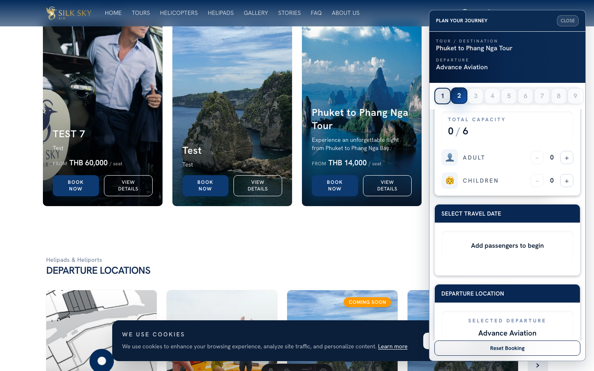
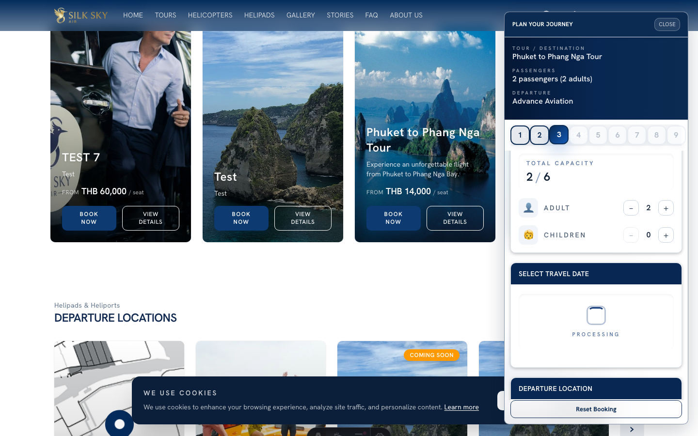
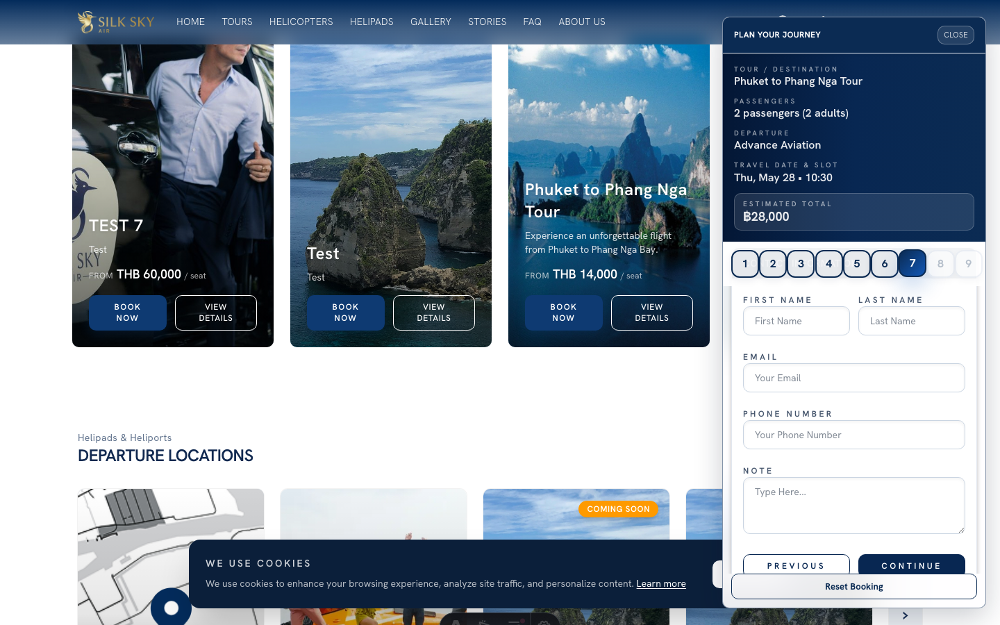
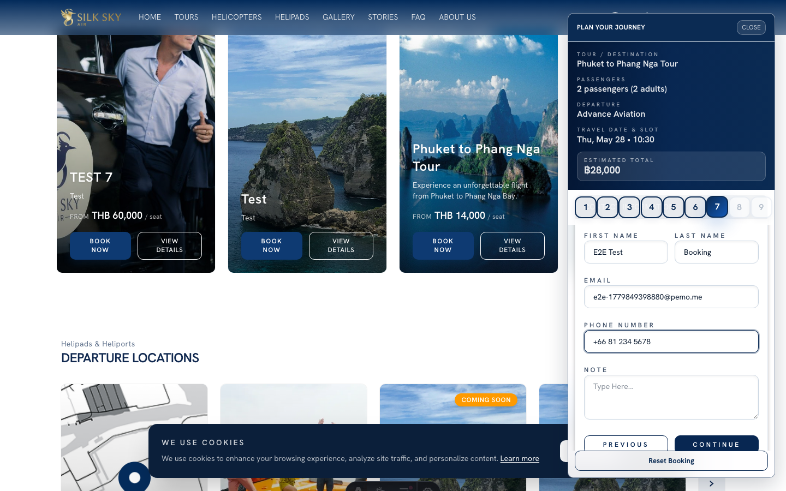
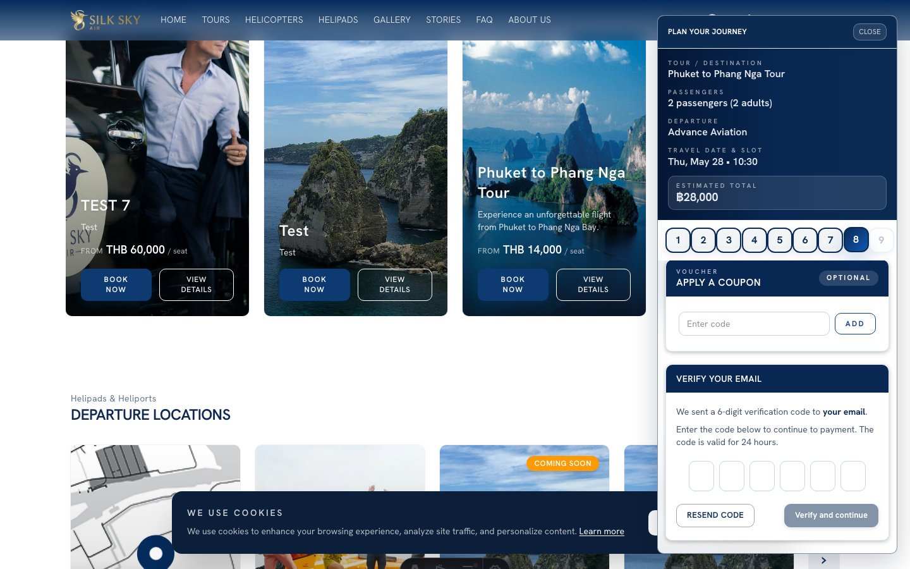
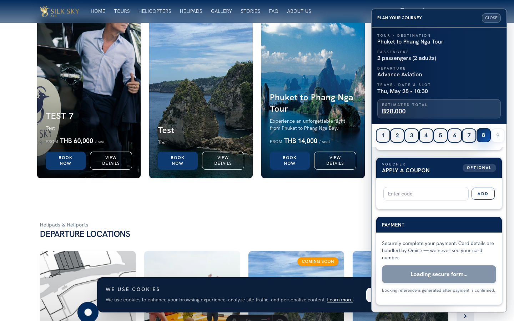
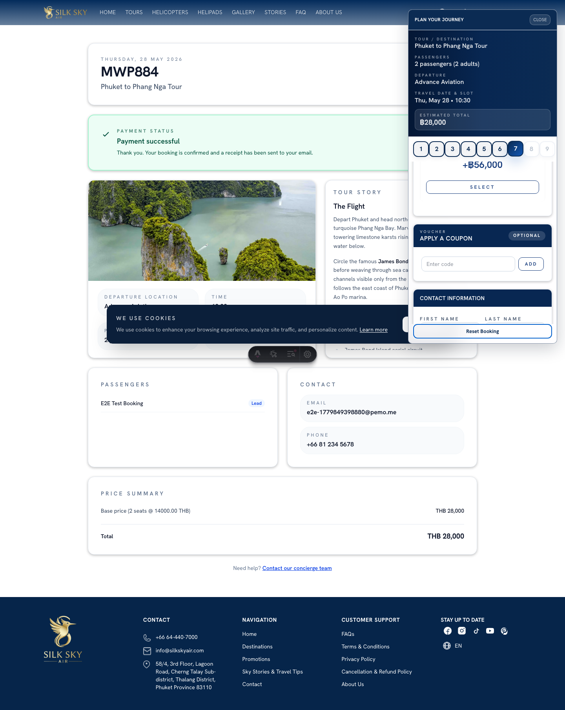

Payment-Before-Confirmation
App: WebSite Who uses it: Support agents handling booking issues; anyone who needs to understand or demo the customer booking flow. What it does: The booking flow takes payment up-front, before the booking is confirmed. The customer pays with a card, completes 3-D Secure if their bank requires it, and lands on a confirmed step that shows the booking reference.
Before you start
- Staging URL:
https://staging.www.silkskyair.com - Account: Not required — guest checkout works.
- Test card:
4242 4242 4242 4242(Omise's published Visa test card — successful charge). Any future expiry, any 3-digit CVV. Documented insilkskyair-www/tests/e2e/booking-flow-helpers.tsasTEST_CARD_4242. Never enter a real card on staging. - Prerequisites: at least one bookable tour with available dates.
Step-by-step
Step 1 — Open the booking widget
From the homepage, click a Featured Tour card's Book Now button. The widget opens with that tour pre-selected.

What you should see: The booking widget overlay with the tour name at the top.
Step 2 — Choose passengers
Adjust the passenger stepper.

What you should see: Plus/minus controls for each passenger type (adult, child, infant where applicable). Numbers update live.
Step 3 — Pick a date and slot
Pick an available date, then a slot.

What you should see: A date grid with available dates clickable; selecting a date reveals available time slots.
Step 4 — Contact info
Fill the contact form (firstname, lastname, email, phone). An optional Note field is here — covered in detail under Customer Notes — End-to-End.

What you should see: A form with the contact fields filled in.
Step 5 — Email-OTP verification
After submitting contact info, the widget switches to the OTP verifying step. The customer would normally receive an email with a one-time code.

What you should see: Six OTP digit inputs. In test mode, the OTP is fetched via the test endpoint and entered automatically.
Step 6 — Pay button
After OTP verification, the widget transitions to the paying step.

What you should see: A prominent Pay button. Clicking it opens the Omise hosted card form in an iframe.
Step 7 — Confirmed step
After successful payment (and 3-D Secure if the bank requires it), the widget switches to the confirmed step.

What you should see: A success card with the booking reference code prominently displayed and a confirmation message: "Payment received. You're booked." The widget includes a Book another button.
Tips & common questions
- What happens if the card is declined? The widget surfaces the Omise rejection reason inline. Booking is not created. The customer can try a different card without losing the rest of their selections.
- Can the customer refresh mid-flow? Yes — the widget persists progress to localStorage and restores it on refresh, up to (but not including) the payment step.
- What if 3-D Secure times out? Same as a decline: inline error, no booking created.
- Where does the booking go after confirmation? A confirmation email is sent. Internally the booking lands in BackOffice → Bookings.